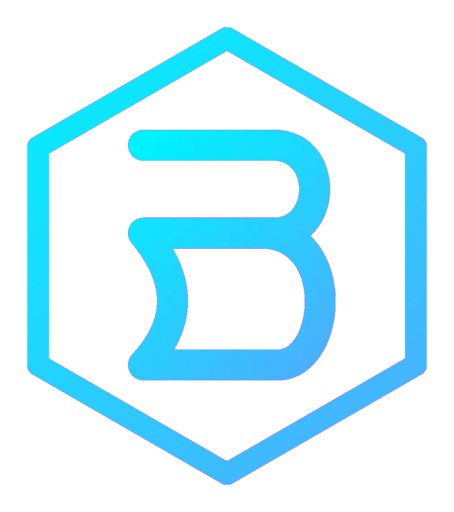
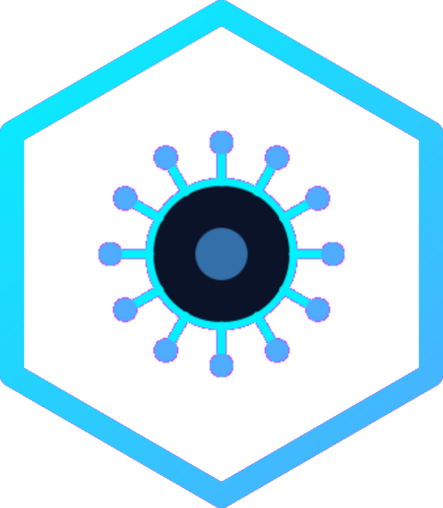

Lehký linuxový systém postavený na Debianu a XFCE — s vlastní sadou nástrojů rovnou na palubě.
BorgOS má rovnou v sobě tři aplikace, které v běžné minimalistické instalaci chybí.

Antivirová kontrola nad ClamAV, plus čistič systému — uvolní místo od cache balíčků a starých logů.
Přehledný seznam dostupných aktualizací s výběrem — nainstaluješ jen to, co chceš.
Správce úloh, živé grafy CPU a paměti, a přehled specifikací zařízení na jednom místě.
Vyber verzi podle procesoru ve tvém počítači. Obě bootují jak přes UEFI, tak (u Intel/AMD) i přes starší BIOS.
Pro naprostou většinu stolních počítačů a notebooků — Intel i AMD, poslední zhruba patnáct let.
Stáhnout pro Intel/AMDPro ARM64 zařízení a virtuální stroje na Apple Silicon Macích (UTM, VMware Fusion).
Stáhnout pro ARMNaměřeno na čerstvé instalaci, včetně všech tří vlastních aplikací.